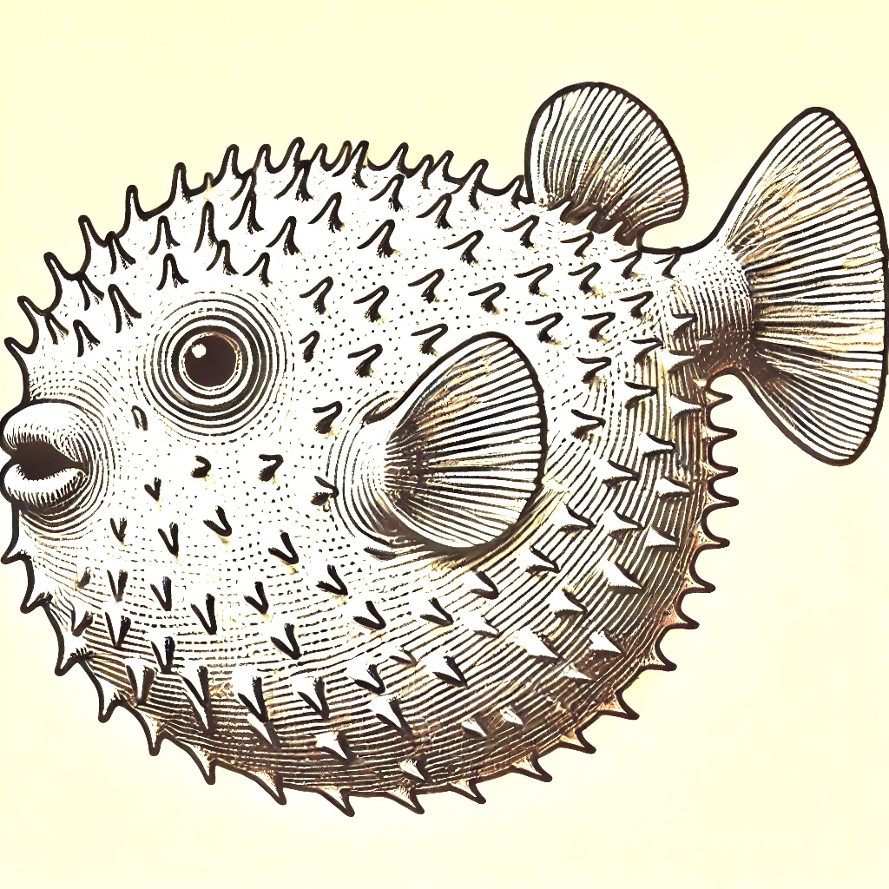

exe.dev admits what servers are, unix over ssh. it is a good ui and api, so let's do ssh first, and do it well.

make a new machine with persistent disk. connect to it.
automatic HTTPS proxying
use <name>-<port> to reach any port on your machine
sign up now, in your terminal